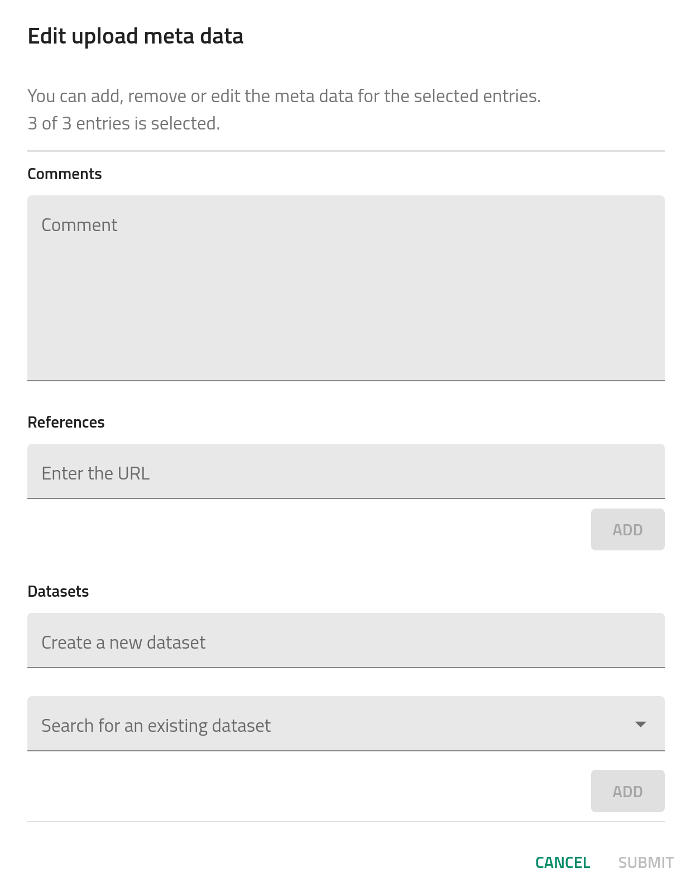

Uploading molecular dynamics data to NOMAD (~40 min)¶
There are several ways to upload your data to NOMAD:
- By dragging-and-dropping your files into the
PUBLISH > Uploadspage. - By using the shell command
curlfor sending files for upload. - By using the python
responselibrary to submit a query to the NOMAD API.
For this tutorial, we will stick to the simple drag-and-drop method. However, some information about the python API for uploading is provided under the Advanced > Using python API for uploading.
In general, you can upload files one by one or upload entire file structures in .zip or .tar.gz formats. First, download the zip file with the example simulation data for this part of the tutorial:
Take a minute to examine the directory structure. If you are familiar with Gromacs you will immediately see the input/output from 3 simulations: an energy minimization (Emin/), an NPT equilibration (Equil-NPT/), and an NVT production run (Prod-NVT/). In the main directory, you will also see a .yaml file, which contains the NOMAD schema for connecting these 3 simulations into a workflow. More information about these custom workflow schemas can be found under Advanced > Creating custom workflows.
On the top-left menu, click on PUBLISH > Uploads.
Then click on CREATE A NEW UPLOAD and either drag-and-drop the water_workflow.zip file directly onto the page or click on the CLICK OR DROP FILES button to find it in your local directories.
After the files are uploaded, a processing is triggered. In brief, NOMAD interprets the files and divides them into two categories: mainfiles and auxiliary files. In the same upload, there might be multiple mainfiles and auxiliary files organized in a folder tree structure.
Info
The mainfiles are those files which are representative of a given computational calculation. The presence of a mainfile in the upload is required for NOMAD to recognize a calculation. NOMAD supports several computational codes for first principles calculations, molecular dynamics simulations, and lattice modeling, as well as workflow and database managers. Currently, both the Gromacs and Lammps packages are supported. We are also developing a custom schema based on the H5MD format, to allow users to upload simulation data run with any MD engine.
For each supported code, NOMAD recognizes a single file as the mainfile. For example, the Gromacs mainfile is the native .log file created during the simulation. The remaining files that have not been identified as mainfiles are designated as auxiliary files. You can find further information about the various supported codes, mainfiles, and auxiliary files in the general NOMAD documentation under Supported parsers.
Tip
We recommend to keep as many auxiliary files as possible together with the mainfile, but without exceeding the uploads limit—32GB file size limit per upload. For the routine upload of simulations that exceed this limit, we suggest that you prune the trajectory file in advance, to store only a subset of the data on the NOMAD repository. In this case, the parsers should still correctly store the configurations as well as additional metadata dealing with the input parameters to the simulation.
For special cases of larger simulations or datasets that must be stored in full, special processing procedures are required. In this case, you should contact the NOMAD/FAIRmat team for assistance. Alternatively, you can post questions or requests on the NOMAD MATSCI Community Discourse Forum.
During the processing, NOMAD will store the simulation data and metadata within the NOMAD Metainfo schema. In this case, the parsing should take ~ 30 seconds. You should now see the successfully processed data overview:
Sections of the Uploads page¶
At the top of the uploads page, you can modify certain general metadata fields.
The name of the upload can be modify by clicking on the pen icon . The other icons correspond to:
- Manage members: allows users to invite collaborators by defining co-authors and reviewers roles.
- Download files: downloads all files present in the upload.
- Reload: reloads the uploads page.
- Reprocess: triggers again the processing of the uploaded data.
- API: generates a query with a JSON body to use by the NOMAD API.
- Delete the upload: deletes completely the upload.
The remainder of the uploads page is divided in 4 sections. The first section, (1) Prepare and upload your files, shows the files and folder structure in the upload. You can add a README.md in the root directory and its content will be shown above this section..
We will skip section 2 for now and come back to it in a second.
The third section, (3) Edit author metadata, allows users to edit certain metadata fields from all entries recognized in the upload. This includes comments, where you can add as much extra information as you want, references, where you can add a URL to your upload (e.g., an article DOI), and datasets, where you can create or add the uploaded data into a more general dataset.

The final section, (4) Publish_, lets the user to publish the data with or without an embargo. This will be explained more in detail in How-to publish data.
Warning
Please, do not publish this test data! There is a test deployment of NOMAD where you can safely perform test publishing, as the data is periodically deleted.
Now go back to the second section, (2) Process data, which shows the processed data and the generated entries in NOMAD:
Let's examine the production simulation by clicking the 3 dots to the right of the entry labeled Prod-NVT/mdrun_Prod-NVT.log, circled in green in the above image. You will now be on the OVERVIEW page for this entry, which aims to provide a simple description of this entry through visualizations of the system itself, some key observables, and some of the overarching metadata. The OVERVIEW page will be examined in detail in Tutorial 2. For now, we will focus on how the uploaded data is stored within the NOMAD repository. In addition to the OVERVIEW tab, there are 3 other tabs at the top of the page: FILES, DATA, and LOGS.
Click on the FILES tab. Here you will find all the raw data that was uploaded via the .zip file, retained within the original file system structure. The raw files are stored in the repository and can be downloaded at any time.
Now click on the LOGS tab. Here you will find some technical information about the data processing along with any warnings or errors that were raised by the NOMAD software.
Finally, click on the DATA tab. Here you can navigate through the NOMAD Metainfo for this entry, i.e., the processed and normalized version of the simulation data and metadata.
The NOMAD Metainfo¶
NOMAD stores all processed data in a well defined, structured, and machine readable format, known as the archive.
The schema that defines the organization of (meta)data within the archive is known as the MetaInfo.
More information can be found in the NOMAD docs: An Introduction to Schemas and Structured Data in NOMAD.
Duplicate your tab and go to Analyze > The NOMAD Metainfo in the top-left menu of NOMAD. Here you can navigate through or search the entire set of NOMAD Metainfo definitions.
The NOMAD Metainfo covers a very wide range of materials data beyond computational data, including electronic lab notebooks and a variety of experimental techniques. The most important archive sections for computational data is illustrated in the following diagram:
archive
├── run
│ ├── method
│ │ ├── atom_parameters
│ │ ├── dft
│ │ ├── forcefield
│ │ └── ...
│ ├── system
│ │ ├── atoms
│ │ │ ├── positions
│ │ │ ├── lattice_vectors
│ │ │ └── ...
│ │ └── ...
│ └── calculation
│ ├── energy
│ ├── forces
│ └── ...
└── workflow2
├── method
├── inputs
├── tasks
├── outputs
└── results
Search through the NOMAD Metainfo sections displayed above to get an idea of what kinds of quantities are stored in each section. In Part II, you will learn how to explore the actual populated quantities of the Metainfo for specific entries.
Navigate to section run program, where we find some basic information about the simulation code (name and version):
Now navigate to section run method:
Under atom_parameters you will find a list of force-field-dependent atom attributes such as mass and charge. Under force_field model contributions you will find a list of intramolecular interactions defined for this simulation. The development of metadata for a more comprehensive storage of force fields in NOMAD is currently underway. Under force_field force_calculations you will find some basic input parameters dealing with the calculation of forces in this simulation.
Navigate to section run system 0:
The system section holds the configurational information from this entry. The first item in this section, 0, corresponds to the first saved configuration within the simulation trajectory. Now click on the atoms section:
There will be a prompt to ask if you would like to visualize the system. If you click yes, the particles within the simulation box will be displayed. (The visualizer can also be accessed with additional features in the OVERVIEW page). In the atoms section, various atom attributes are stored, e.g., the positions and velocities of each atom for this frame. Notice that the simulation trajectory is stored as a list of repeating dictionaries, as opposed to the typical dictionary of lists that may be found in trajectory analysis software, such as MDAnalysis. In short, this is done for consistency with data from other methods that are stored in the NOMAD repository. However, when working with the data from a particular entry, there are tools in NOMAD to easily convert the Metainfo to a more convenient format for analysis. More about this in Tutorial 3.
Now click on the atoms_group section:
This section holds a hierarchical organization of the system (denoted in the following as the topology), based on the bonds defined in the force field used for this simulation. By default, the first level of this hierarchy contains molecule groups, which group together all molecules of the same type. Now, by clicking the atoms_group subsection of this group, you reach the next level down, which contains each molecule within the current molecule group. Similarly to these molecule groups and molecule levels, monomer groups and monomer levels will be defined for polymer systems. The individual atoms within each molecule are not explicitly stored within this hierarchy, but are simply referenced via their indices within the atoms section. Take a few minutes to examine this hierarchy and the stored quantities in more detail. Note that at the moment the hierarchy is only stored in the first entry of system.
Now go back and navigate to section run calculation 0:
The calculation section contains any saved thermodynamic quantities that are a function of a single configuration, e.g., energy, pressure, temperature, etc., as well as any saved force information for the atoms within each configuration.
Assignment
-
What are the oxygen and hydrogen atom types used in the force field for this simulation?
-
What is the step number of the last saved configuration of this simulation? What is the corresponding time for this configuration?
-
(CHALLENGE) Which thermostat is used for temperature coupling in this simulation? What is the frequency of temperature coupling?
Success
-
OW, HW1, and HW2 (see run → method → atom_parameters → atom_index → label)
-
step = 5000, time = 5 ps (see system → 10 → step and system → 10 → time, respectively)
-
thermostat = "langevin_goga", frequency of coupling = 500 fs (see workflow → molecular_dynamics → integration_parameters → thermostat_parameters → thermostat_type and workflow → molecular_dynamics → integration_parameters → thermostat_parameters → coupling_constant, respectively).